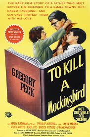
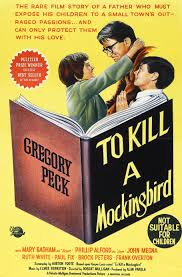
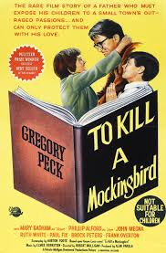
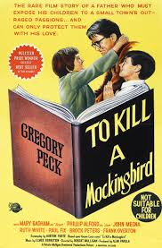

The Jim Crow Laws were a set of laws that allowed and enforced segregation. For Example, there used to be a law that prohibited white people and colored people from getting married.
Idk right now, fix this later
Idk right now, fix this later